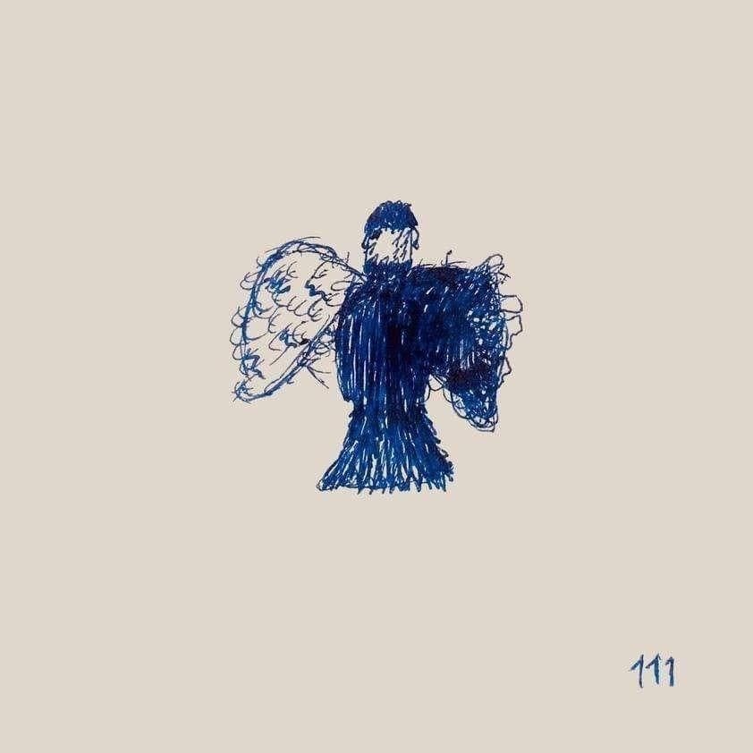

111 - Milo J
Código a escanear para ir a spotify
Este álbum consta de 9 canciones, a continuación se inserta nombre y video musical de cada una:
TU MANTA - Milo J
CARENCIAS DE CORDURA - Milo J ft. Yami Safdie
M.A.I. - Milo J
DESEO PERDER (INTERLUDIO) - Milo J
SINCERA TE - Milo J
TE FUI A SEGUIR - Milo J ft. Yahritza Y Su Esencia
UNA BALA - Milo J ft Peso Pluma
ALUMBRE - Milo J ft Nicki Nicole
A1RE - Milo J